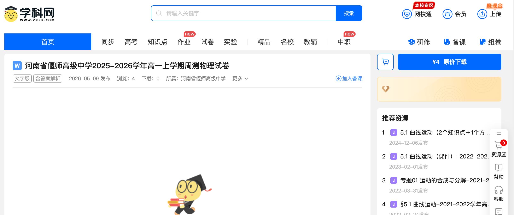
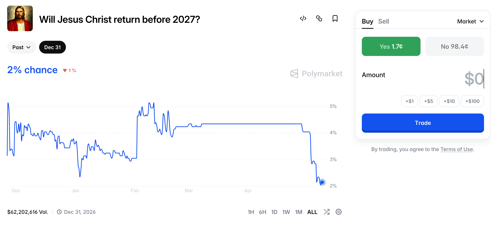

从 熟悉 的地方开始
什么是市场？
直接问学生。这个问题比看起来难回答——它足够简单以至于你从来没想过。先收集他们的直觉回答，不急着给定义。然后从大家都熟悉的例子开始：
我们先从最日常的说起。以下这些你一定见过或参与过：
- 菜市场——最「字面意义」上的市场
- 股票市场——你可能没参与过，但你爸妈可能参与了
- 房地产市场——你住的地方就是某次市场交易的结果
- 二手车市场、二手教材市场
- 辅导班、家教的市场——你可能就是这个市场里的消费者
再想想一些你可能没想到也是「市场」的东西：
- 黄牛——演唱会、医院挂号、甚至食堂占座
- 帮排队的服务
- 考试卷的交易——各种真题、模拟卷的流通

这些例子的共同点是什么？都有买方和卖方，都有某种「价格」在起作用。但这就够了吗？接下来我们看几个更奇怪的例子。
有趣的 市场
以下这些市场确实存在。它们各自在交易一些你可能觉得「这也能卖？」的东西。
域名市场
互联网上的每个网站都需要一个域名（比如 baidu.com）。域名先到先得——谁先注册就是谁的。
明星祝福视频
一些平台让你直接向明星付费，请他们录一段视频。你生日的时候想让偶像叫你的名字？可以，付钱就行。
Polymarket
一个让你用真金白银对未来事件「定价」的平台。你认为某件事会发生？买入。不会？卖出。最终由现实揭晓。
域名：一串字符值多少钱？
域名本身没有任何物理实体——它只是一串字母。但因为好记、好听的域名是有限的，它就变成了一种稀缺资源。有人专门低价注册大量域名，等别人需要的时候高价转卖，就像互联网上的「黄牛」。买家购买的不是一个「东西」，而是一个「位置」——互联网上独一无二的门牌号。
一个更精彩的故事：.ai 域名其实属于安圭拉（Anguilla），一个加勒比海上人口只有一万多人的英国海外领地。1995年这个域名后缀被分配给它时纯属巧合。但AI浪潮让它变成了一座金矿：claude.ai、perplexity.ai、x.ai、meta.ai、google.ai 都在用 .ai 域名。2025年，.ai 域名注册费给安圭拉带来了约 8500万美元的收入——占这个小岛全年国家预算的 47%。
一个字母的巧合，改变了一个国家的财政命运。
明星的时间：注意力也有市场价
在 Cameo 这样的平台上，你可以花钱让明星或网红录一段个性化的短视频——比如生日祝福、求婚助阵、甚至让他们说一句你指定的话。不同明星的价格完全不同：过气明星可能只要几十美元，当红的可以到几千美元。
这意味着「一个人的15秒注意力」是有明确市场价格的。你在买的不是视频本身，而是「这个人专门为我花了15秒」这件事。时间、注意力、甚至「专属感」，都可以被定价。
Polymarket：给未来定价
Polymarket 是一个「预测市场」平台。对于一个未来事件（比如「2024年谁会赢得美国大选？」），你可以用真钱买入「会」或「不会」。判断对了赚钱，错了亏钱。所有人的买卖行为汇总在一起，形成一个「价格」——这个价格反映的是市场对这件事发生概率的集体判断。
2024年美国大选期间，Polymarket 上的价格变动比民调更准确地预测了选举结果。
Polymarket 趣事
Polymarket 上有一个真实的市场：「耶稣会在2027年之前重返人间吗？」
目前的市场价格（即人们用真金白银表达的概率）大约是……3%。

这引出两个好问题：
为什么会有人创造这种市场？和赌博的区别是什么？
保险和 Polymarket 的相似之处
现实中有另一类市场和 Polymarket 有相似之处——保险。二者交易的商品都是基于未来事件的发生与否而决定是否产生收益的一种资产。
这种资产的一个重要功能，就是帮助人们在面对风险的时候有可以提前缓解风险的工具。
这种商品是天然就有的吗？它是怎么产生的？（留作思考，不需要回答）
什么东西 没有 市场？
我们看了很多「这也能卖？」的例子。但反过来想——有些东西你觉得理应可以交易，却没有市场；有些东西从来没有人想过要交易。
知识的市场边界
求根公式免费，但专利是有市场的。版权也是有市场的。一首歌要收费，一条数学定理不收费——两个都是「知识」，区别在哪里？
这里不需要标准答案。引导学生注意到：有些知识「你用了不影响别人用」（求根公式），有些知识的生产需要巨大的投入，如果不收费就没人愿意生产（一首歌、一个新药）。市场在这里的角色是：通过定价来激励生产。没有市场，有些东西可能根本不会被创造出来。
市场在什么条件下 可以 存在？
我们看了存在的市场，也看了不存在的市场。现在试着总结一下：一个市场要成立，需要什么条件？
核心问题
市场「可以存在」是否意味着它「必然产生」？如果不是，还需要什么条件？
先收集学生的答案，再结合下面的框架梳理。不需要全部覆盖，视讨论走向而定。
一个市场需要什么？
没有稀缺性，就没有定价的必要。空气从前不是商品，但雾霾让洁净空气的价值嵌入了房价和人口流动中。
- 稀缺性：让定价变得有必要
- 可排他性：「你用了影响我用」才能交易；求根公式用了不影响别人用，很难形成市场
如果每个人自己做和找别人做一样好，就没有交易的必要。市场存在的前提是：交易能让双方都变得更好。
市场需要有足够多的买家和卖家（thickness）。互联网大幅降低了这个门槛——闲鱼上再冷门的东西都可能找到买家。
价格怎么定？拍卖、协商、还是竞争？供给和需求如何塑造价格是核心问题。
支撑交易可信赖地发生所需的制度安排。
- 产权制度：谁拥有什么？如何强制执行？（土地使用权、碳排放权）
- 信息披露：二手车验车报告、淘宝评价系统——降低信任成本
- 准入门槛：为什么不是谁都能开药店？防止逆选择，保护高质量卖家
技术降低了交易成本，让原本不可能的市场成为可能。
- 搜索和匹配：淘宝、京东把零散商家和买家匹配在一起；抖音、B站让创作者和消费者直接交易
- 执行和监管：Polymarket 需要区块链确保不可篡改；碳排放权需要监测技术
" 市场并不是自然而然地存在的，而是一系列社会条件的产物，甚至商品本身也需要被社会建构。"
肾脏市场在伊朗合法、在中国不合法。碳排放权需要政府「发明」排放权这个东西才有东西可卖。为什么大多数人觉得买卖友谊不可接受？为什么不拍卖大学录取名额？这些边界是谁画的？——道德和文化条件也是市场存在的一部分，但往往被忽视。
这堂课的核心不是给出答案，而是让学生自己感受到「市场的存在不是理所当然的，市场的缺席也不是理所当然的」。如果讨论热烈，可以延长讨论时间，压缩展示环节。Polymarket 如果有网络条件，可以直接打开网站给他们看实时数据。
市场不是唯一的 分配方式
市场可以分配稀缺资源——但不用市场，还有很多其他方式。每种方式都有自己的效率和公平问题，没有一种是完美的。
春运火车票、医院挂号、食堂打饭。成本不是钱而是时间，对时间充裕的人有利。
车牌摇号、某些学校的入学名额。看似最「公平」，但也最不考虑谁更需要。
医院急诊按病情严重程度排序，保障房按收入水平分配。需要有人制定标准，而标准本身可以被博弈。
「找人帮忙」「走后门」。难以用制度彻底消除。
高考分配大学名额。按能力（或至少按考试成绩）分配，但考试本身也可以被金钱影响（补习、学区房）。
选择不用市场，不意味着市场不会自己冒出来。只要稀缺性存在，市场就有动力从缝隙里生长出来。
" 只要稀缺性存在，市场就有动力从缝隙里生长出来。"
火车票用排队分配 → 黄牛出现了，用金钱替代了时间。医院挂号用行政分配 → 号贩子出现了。车牌用摇号分配 → 租牌市场出现了。这本身就说明了市场力量的顽强。
可以问学生：这些非市场分配方式，最后是不是都某种程度上「长出了市场」？「走后门」是不是也是一种市场？它的「价格」是什么？
市场 存在 的利与弊
市场可以存在，并不意味着它带来的一定是好事。我们来看一些真实案例，试着判断：这个市场是「解决了问题」还是「制造了问题」？
核心问题
市场存在 vs 不存在——各有什么利弊？举出一些实际的例子，论述它的正面或负面影响。
以下案例可选择性使用，也可请学生自己举例。核心是引导学生注意到：市场通常能提高效率，但也可能制造不平等、利用信息不对称，或让某些本应公平分配的资源变成可买卖的商品。
六个参考案例在 slides 中放在同一页，注明「如果想不到例子，同学们可以参考以下新闻」。不要在学生讨论前主动展示，等学生想不出来再翻到这页。
疫情期间，药店和工厂的口罩被抢购一空后，二手转卖、代购、囤积居奇的市场迅速形成。价格暴涨几十倍。
这个市场是「解决了问题」（让口罩流向最需要的人）还是「制造了问题」（让买不起的人更买不到）？
学位本身无法直接买卖，但通过房产市场，优质教育资源事实上被定价了。买一套学区房，实质上是在买一个入学资格。
市场的存在让教育不平等变得更加可见，还是加剧了不平等？
官方售价几百元的票被炒到几千元。有人认为这是市场效率的体现（最想去的人得到了票），有人认为这是对普通消费者的剥夺。
两种说法各有什么道理？黄牛创造了价值吗？
莆田系医院的问题。当医疗变成一个充分市场化的领域，医院有动力夸大病情、过度治疗。信息严重不对称的情况下，患者没有能力判断医生的建议是否真实必要。
医疗适合完全交给市场吗？如果不适合，原因是什么？
外卖平台让小餐馆触达了以前接触不到的客户，大幅扩大了市场规模。但算法的派单逻辑把骑手困在越来越紧的时间压力里，事故率随之上升。
市场扩大了，但谁受益谁受损？平台算法是市场力量，还是一种新的管控？
北大清华暑假参观名额秒没，黄牛几百块一个名额。本来免费开放的公共资源，因为需求太大变成了稀缺品，市场自动从缝隙里冒出来了。
这个市场的出现说明了什么？大学应该直接卖参观票吗？
市场的力量
- 一个很有趣的、时常有效的人类间的协调机制
- 价格的信息力量——价格不只是数字，它携带着分散在无数人头脑中的信息（待展开）
这部分不需要得出「市场好」或「市场不好」的结论。核心洞察是：市场是一种工具，它的效果取决于具体的情境——谁参与、信息是否对称、有没有外部性、资源本身的性质是什么。同一个逻辑，在口罩市场里可能提高效率，在医疗市场里可能带来危害。